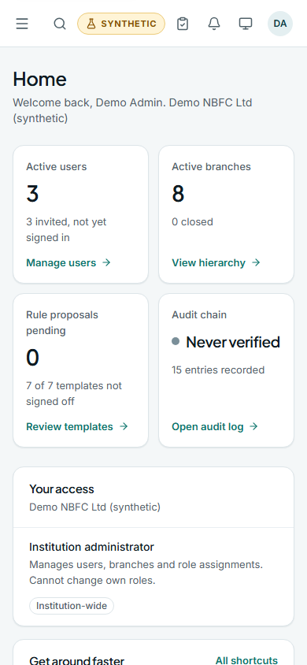
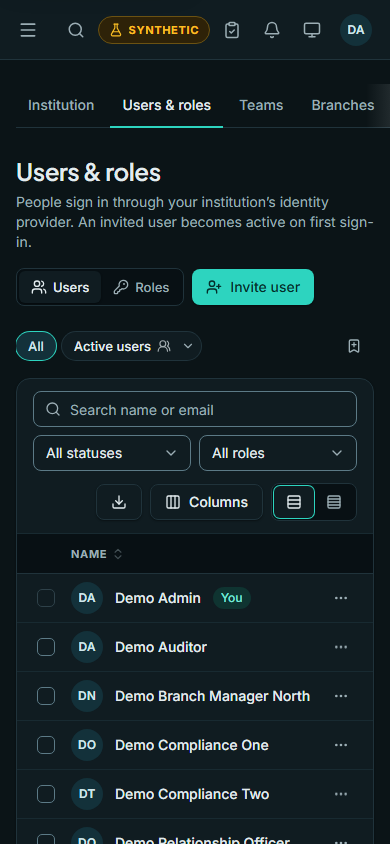
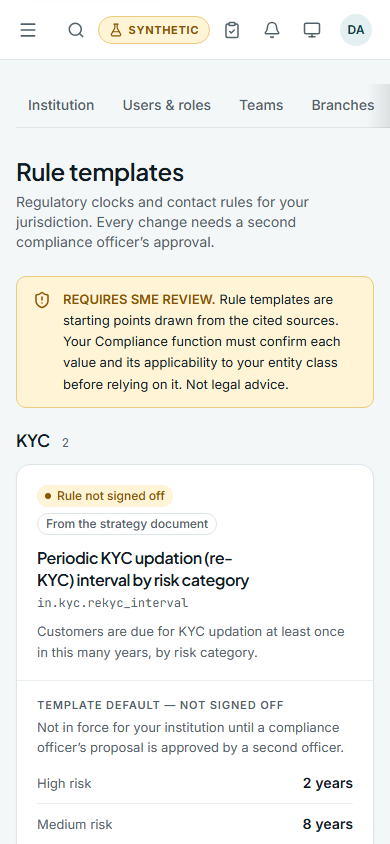

A CRM for smaller banks and lenders, India NBFCs and HFCs first, then US credit unions and community banks. Three of ten build checkpoints are finished and tagged, and the customer core is being built now. Every screen below comes from the real product, running on synthetic data.
The approved v0.2 plan runs in ten checkpoints. Each one is built, reviewed, tested and tagged before the next one starts.
Each institution's data is kept apart inside the database itself, and an automated suite checks that for every table. Five tests that need a full PostgreSQL server are skipped on this machine and will run in CI.
Below 1024 px the sidebar becomes a slide-out menu, and pages keep a 16 px gutter with no sideways page scroll.



KYC and documents, leads and routing, the loan application pipeline, loan accounts and complaints, collections with contact rules, and role dashboards with reports.
A clickable, read-only version of the product on synthetic data is being prepared and will replace this page. It is updated after every build checkpoint.
REQUIRES SME REVIEW. The rule templates shown in these screens (RBI KYC, RB-IOS complaints, digital lending, recovery conduct, CFPB, Reg B, TCPA/Reg F) are starting points taken from cited sources. No regulatory figure takes effect until an institution's compliance officers sign it off. Not legal advice.